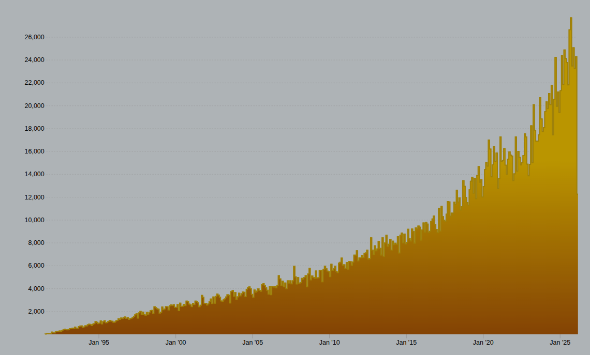

arXiv 论文量从 2000 年的 1.8 万篇/年增长到 2025 年的 28.5 万篇/年，日均近 800 篇新论文涌入，远超任何研究人员的阅读与筛选能力。然而，arXiv 本身缺少结构化的机构归属信息、个性化的论文总结以及按实体维度聚合的能力，现有工具也未能填补这些缺口。PaperMap 利用 AI 自动提取机构信息、生成智能总结，并以公司、高校、作者为核心构建论文全景地图，让研究人员每天只需 10 分钟即可掌握领域内的关键动态。
25 年间增长超过 15 倍，2020 年后更进入指数级加速期。这已不再是"读论文慢"的问题，而是人力已经不可能覆盖的结构性问题。

图 2. arXiv 月度论文提交量变化趋势（数据来源：arXiv.org）。截至 2026 年 3 月，累计提交量已突破 298 万篇。
arXiv 提供了开放的 API 和 MCP 接口，使得我们可以无限制地访问其完整的论文数据库——数据获取本身不再是瓶颈。真正的问题在于：拿到数据之后，arXiv 提供的元信息远远不够，存在以下关键缺口：
只有作者名字，无法自动化地知道他属于哪个公司或高校。想追踪某个团队的工作，只能靠人工逐篇查阅。
简称（如 LoRA, 3DGS）是论文在人脑中的记忆锚点，但 arXiv 不提供此字段。简称往往隐藏在正文中，很难通过规则提取，导致列表展示时只能用冗长的全名，认知效率极低。
只有原始 Abstract，偏技术细节且篇幅长。面对每天数百篇论文，无法快速判断"这篇值不值得读"。
无法按"公司""高校""作者"维度查看论文时间线。Google Scholar、Semantic Scholar 也仍按论文或引用关系组织，缺少"以你关注的实体为中心"的视角。
arXiv 自带的分类（如 cs.CV、cs.AI）粒度太粗，无法按研究人员关注的细分方向（如"3DGS > 动态场景"）灵活组织论文。
上述痛点不是人工标注、规则系统或众包能解决的，它们本质上需要 AI 的三种核心能力：
作者的机构信息散落在论文正文、致谢、邮箱域名等非结构化文本中，arXiv 元数据里根本不提供。传统正则匹配和规则系统无法可靠处理这种多变、模糊的自然语言表达，只有具备深度语言理解能力的 LLM 才能从自由文本中准确提取并归纳机构归属。
把一篇技术性极强的论文摘要浓缩成"一句话帮你判断要不要读"，需要对论文核心贡献的深度理解。关键词提取、TF-IDF 等传统 NLP 方法只能提供碎片化信息，无法生成连贯且有判断力的总结。LLM 的生成式理解能力恰好填补了这个空白。
日均近 800 篇新论文，即使每篇只花 1 分钟人工处理（读摘要、查机构、写总结），也需要 13+ 小时的连续人力投入。AI 可以在几分钟内批量完成，且质量一致、不会疲劳，实现了从"不可能"到"每天自动更新"的质变。
用 AI 自动处理论文的想法由来已久，但真正可行是多个条件成熟后的结果：
能力、成本、生态工具链三者在此刻汇聚——这正是 PaperMap 诞生的时间窗口。
针对 arXiv 的 5 个信息缺口，PaperMap 用 AI 能力一一补上：
每天只需 10 分钟，快速扫描你关注的公司、高校和作者的最新论文，告别漫无目的的刷 arXiv。
一键查看某个公司（如 Google、OpenAI、Tesla）在某研究方向的全部论文布局，快速掌握竞争对手的技术动态。
以全局视角梳理某方向的研究脉络、关键参与者和时间演进，为综述写作和研究规划提供结构化支撑。
上述功能构建了论文组织的基础设施层。在此基础上，PaperMap 还可以进一步释放 AI 的分析能力，实现更高层级的智能应用：
批量阅读某个机构的全部论文，自动分析其研究重心分布。例如："某科技公司 2026 年的论文主要集中在哪些方向？"
基于论文的共同作者和机构信息，自动发现产学研合作网络。例如："某科技公司主要和哪些高校进行合作？"
将近一周的论文按机构维度自动整理为结构化报告，分析各家公司的主要工作和研究动态，一键推送至飞书群，让整个团队同步掌握前沿进展。